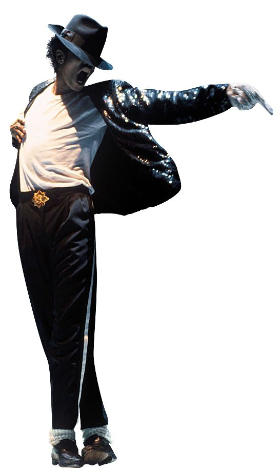

My favourite
My favourite among these great musicians is Michael Jackson. Jackson has had a lasting impact in my life and I would always listen to his music and watch his performances, his talent and work ethic has always inspired me and still does to this day. In my opinion I believe his music has never been matched in terms of sheer quality and innovation, he pioneered many dance moves but the most stand out one being the moonwalk is almost synonymous with his character and was always a cool thing to see. To this day I still play his music as it never fails to put me in a good mood regardless of what happens and for that he will always remain my favourite musician of all time. Some of my favourite songs include:
- Beat it
- Thriller
- Billie Jean
